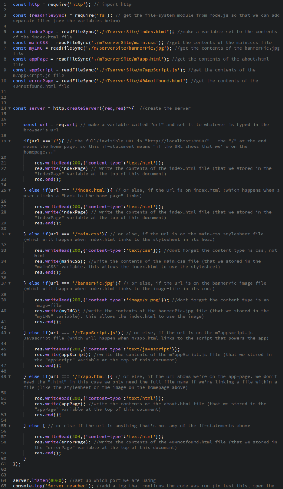
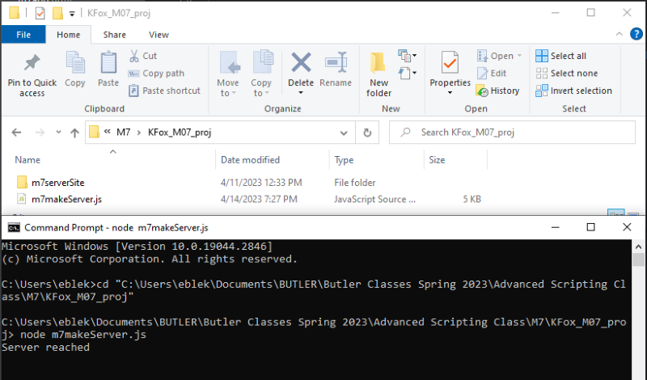
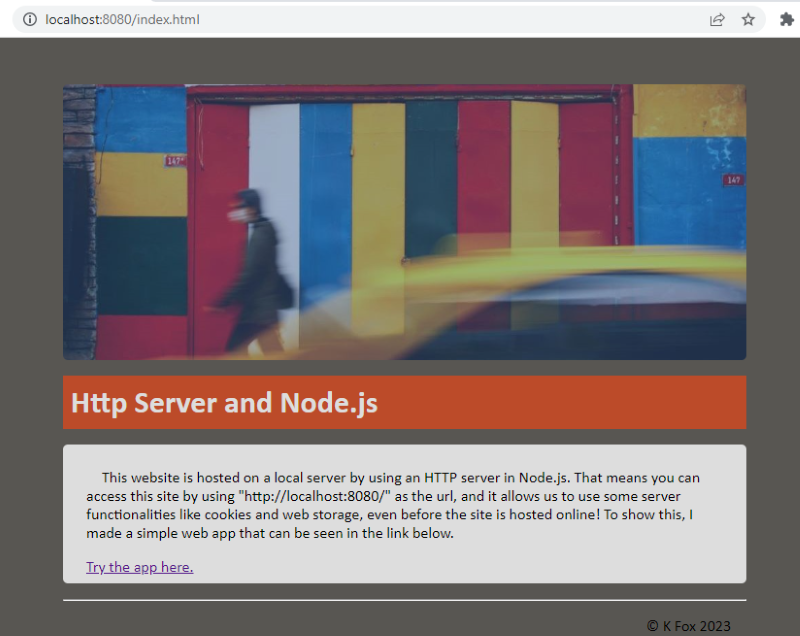
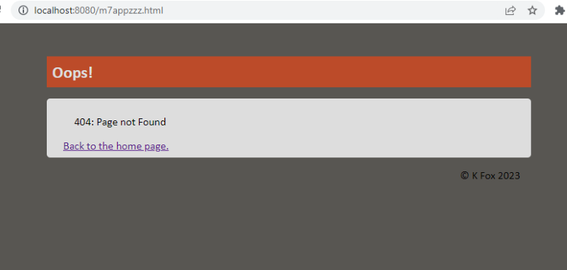
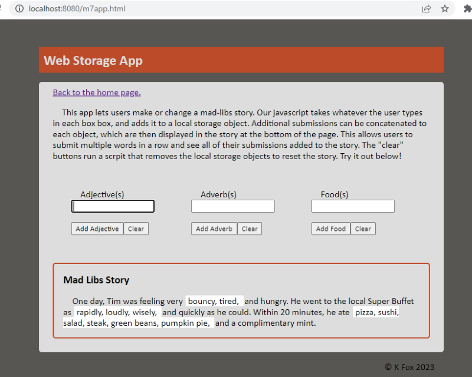
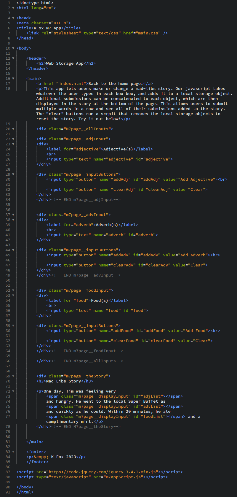
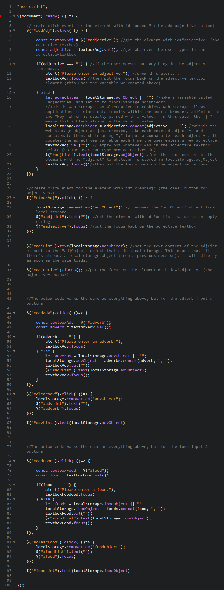

Web Storage and Node Servers
In this unit we learned how to work with web storage as well as Node's built in HTTP module to create a local server. For this project I wrote a JavaScript file that creates a server and displays some web pages. Among them is a simple app that utilizes web storage.
The Web Storage Exercise and HTTP Server Exercise pages both cover what we learned in greater detail. The screenshows below showcase this unit's project.
First I made a script (called m7makeServer.js) that creates a local server and sends my site files as the response.
Next I used the console to run Node.js and my m7makeServer script, which also displays a console-log saying "server reached" to show it's working. Also note that all of my site pages and files are saved in the "m7serverSite" folder within the same directory as the m7makeServer.js script.
To view the pages on the server, I was able to use "localhost:8080" as the url in a browser.
I also tested my 404-error page by trying a typo in the url.
The site's app is explained in the screenshot below...
...and the below screenshots showcase the html and javascript that power the app.
 You can try out the app here.